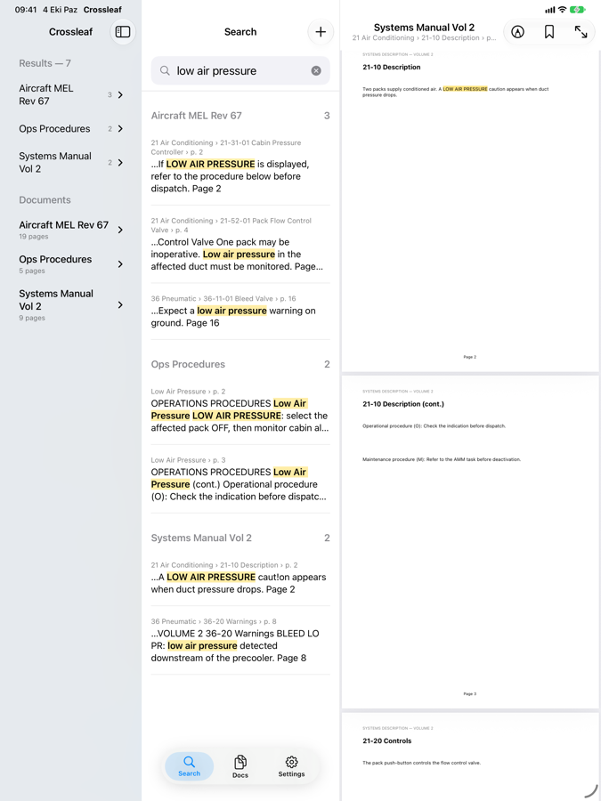
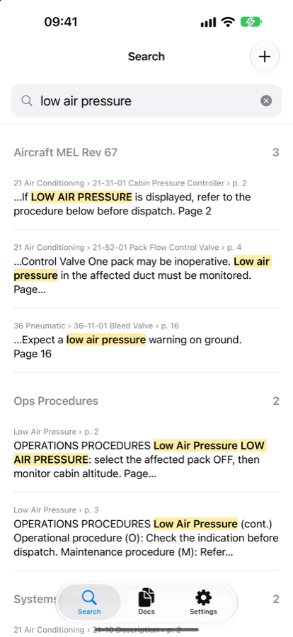

Crossleaf
CrossleafSearch all your PDFs at once
Crossleaf is a workspace for the big PDFs you work with every day: manuals, textbooks, datasheets, rulebooks. Add them once, type a phrase, and see every place it appears in every document, by document, section and page.
iPad and iPhone · one purchase, no subscription · never connects to the internet


How it works
One search, every document
Most PDF readers search the one file you have open. Crossleaf searches all of them, and tells you where each match sits in the document's own structure.
Add your PDFs once
From Files or iCloud Drive, or open one from Mail or AirDrop. Files stay where they are; Crossleaf only reads them. Give a document a short name if you like.
Type a phrase
Results come from every document at the same time, grouped as Document › Section › Page using each PDF's own outline.
Tap a result
The page opens right at the match, highlighted. Go back and your results are exactly where you left them.
Scanned pages too
Pages without a text layer are read with on-device text recognition and added to the search. Nothing is uploaded to do it.
Mark up with Apple Pencil
Draw and highlight on the page. Your markup is saved into the PDF itself, so it shows up wherever you open the file.
Bookmarks and revision reminders
Bookmark any page. An optional weekly reminder tells you to check your documents for new revisions.
Who it's for
Anyone who keeps a stack of PDFs open
Technical manuals
Operating, maintenance and procedure manuals with thousands of pages and a strict section structure.
Studying and research
Textbooks, lecture notes, papers and scanned chapters, searched together before an exam or while writing a thesis.
Datasheets and reference manuals
Every chip's datasheet and reference manual in one place, so a register name finds every document that mentions it.
Rulebooks and anything else
Game rulebooks, cookbooks, contracts, standards. If it is a PDF and you search it often, it belongs here.
Private by design
Your documents never leave your device
Crossleaf never connects to the internet and collects no data. No account, no analytics, no ads, no tracking. That makes it safe for company documents you are not allowed to upload anywhere. Read the privacy policy.
Questions
Frequently asked
Can Crossleaf search scanned PDFs?
Yes. Pages without a text layer are read with Apple's on-device text recognition after you add the document, then searched like any other page. Long scans take a while the first time; you can search the rest while it works.
How many documents can I add, and how big can they be?
There is no set limit. Crossleaf is built for manuals with thousands of pages; the index is stored on your device and searches return in a fraction of a second.
Does it copy my files?
No. PDFs you add from Files or iCloud Drive stay where they are. If a file changes there, for example a new revision, Crossleaf notices and indexes it again. Removing a document from Crossleaf never deletes your file.
Why does it never connect to the internet?
Because the documents people search most are often the ones they are not allowed to share: company manuals, contracts, unpublished work. An app that makes no network requests at all cannot leak them.
Is it a subscription?
No. You buy it once and it is yours, including future updates.
Is there an Android version?
It is in testing and will be on Google Play soon, with the same features.